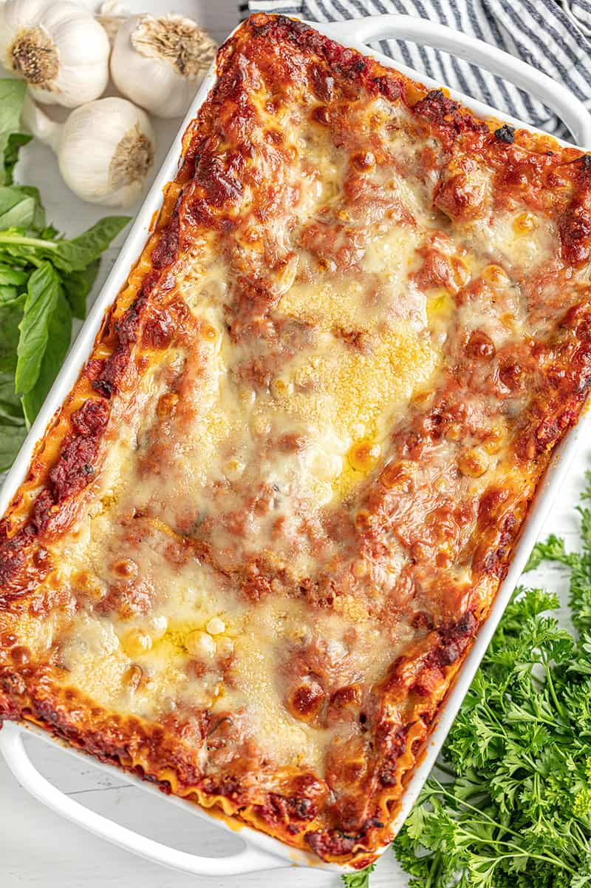

Lasagna

Mouth Watering Home Made Lasagna From The Simplest Ingredients
Homemade lasagna is the best.
This recipe is so good—it’s the kind of lasagna people write about!
If you’ve never made lasagna before or haven’t found a good recipe, you have come to the right place.
Invite a friend because you won’t want to keep this dish to yourself!
Ingredients
The following ingredients are needed to make this sumptuous meal from scratch:
- 1 pound sweet Italian sausage
- 1 pound lean ground beef
- 1 large white onion diced
- 5 cloves garlic minced
- 1 (28 ounce) can crushed tomatoes
- 2 (6 ounce) cans tomato paste
- 1 (15 ounce) can tomato sauce
- 1/2 cup white wine
- 2 tablespoons white sugar
- 1/2 cup chopped fresh basil
- 1 teaspoon fennel seeds
- 1 teaspoon ground oregano
- 1/4 teaspoon ground black pepper
- 30 ounces ricotta cheese
- 2 tablespoons chopped fresh parsley
- 1 large egg
- 1/2 teaspoon salt
- 1/8 teaspoon ground nutmeg
- 1 pound thinly sliced mozzarella cheese about 24 slices
- 1 cup freshly grated Parmesan cheese
Steps
- In a large pot over medium heat, add in ground sausage and ground beef. Use a spoon to break up the meat into
small pieces.Add in onion and garlic and cook until meat is well browned, stirring constantly. Stir in sugar,
fresh basil, fennel, oregano, 1/2 teaspoon salt, pepper, and 1/4 cup chopped parsley.Pour in crushed tomatoes,
tomato paste, tomato sauce, and wine*. Stir well and bring to a simmer.Reduce heat to low and simmer 1-4 hours,
stirring occasionally.
- Meanwhile, place lasagna noodles into the bottom of a pan. Pour hot tap water directly over the noodles,
making sure the pasta is completely immersed in the water. Let them soak for 30 minutes, then drain and discard
water.
- In a mixing bowl, combine ricotta cheese with egg, remaining 2 tablespoons parsley, 1/2 teaspoon salt, and
nutmeg. Refrigerate until ready to assemble lasagna.
- Preheat oven to 375 degrees. Lightly grease a deep 9x13 pan.
- To assemble, spread about 1 cup of meat sauce in the bottom of the prepared pan. Place 4 noodles on top.
Spread with 1/3 of the ricotta cheese mixture. Top with 1/4 of mozzarella cheese slices. Spoon 1 1/2 cups
meat sauce over mozzarella, then sprinkle with 1/4 cup parmesan cheese. Repeat layering two more times to
create three complete layers. To finish, place a final layer of pasta, topped with another 1 cup of meat sauce
to cover the pasta. Top with remaining mozzarella and Parmesan cheese. Cover loosely with aluminum foil.
- Bake in preheated oven for 25 minutes. Remove foil, and bake an additional 25 minutes to allow cheese to brown.
Serve hot.
Main source of this recipe:Click here